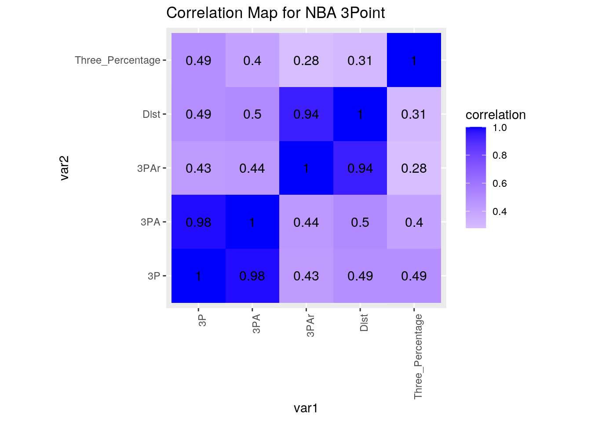
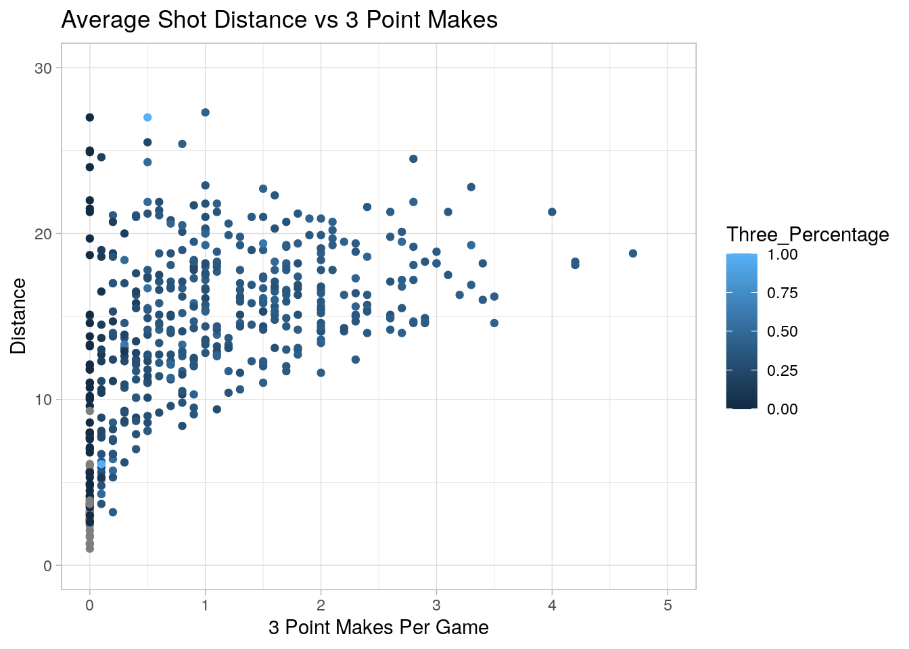
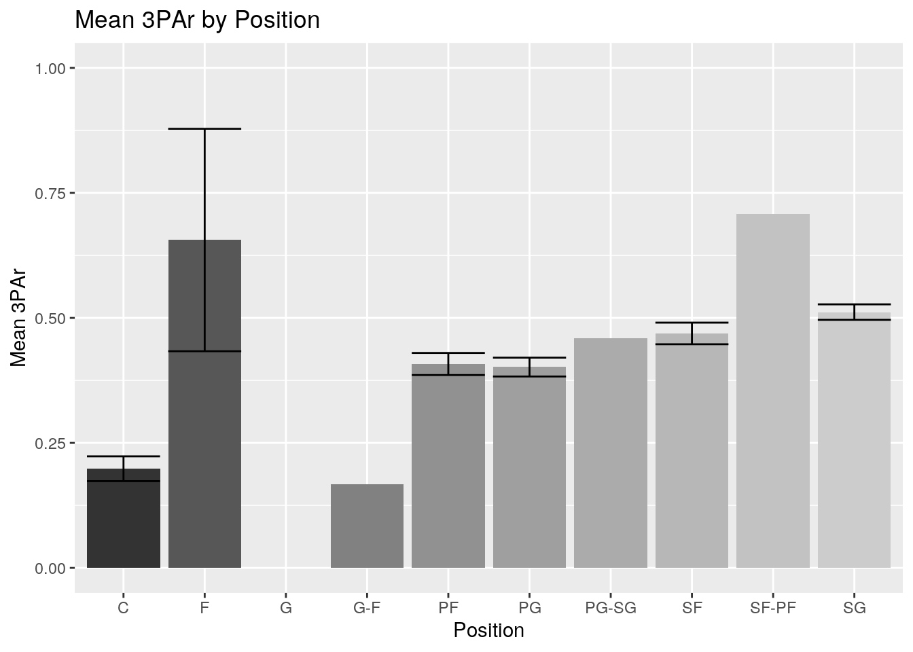
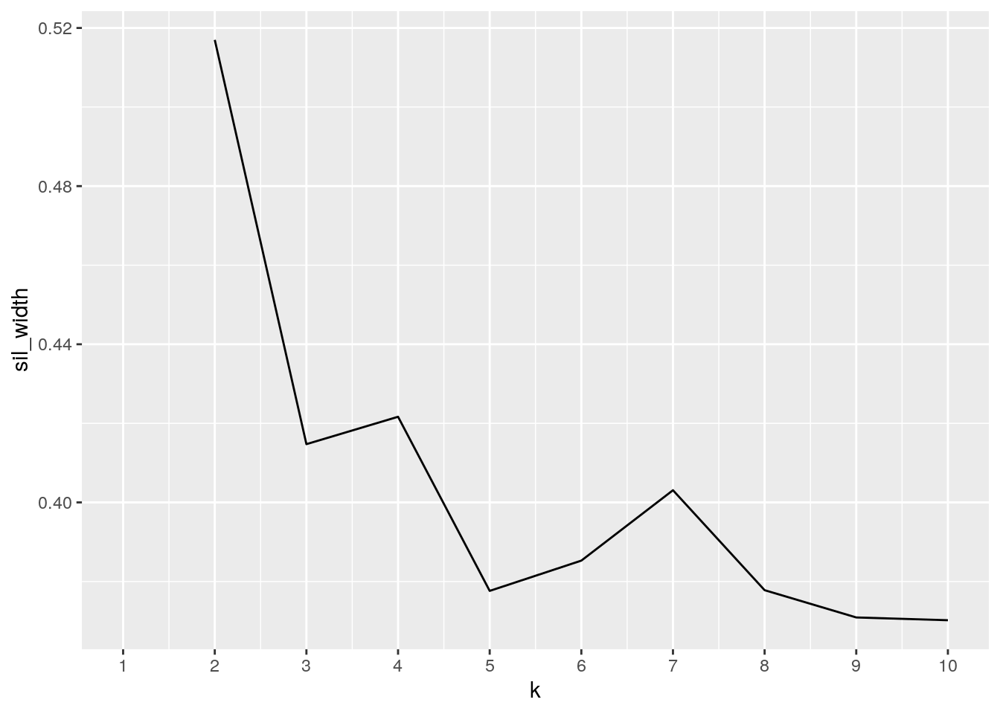
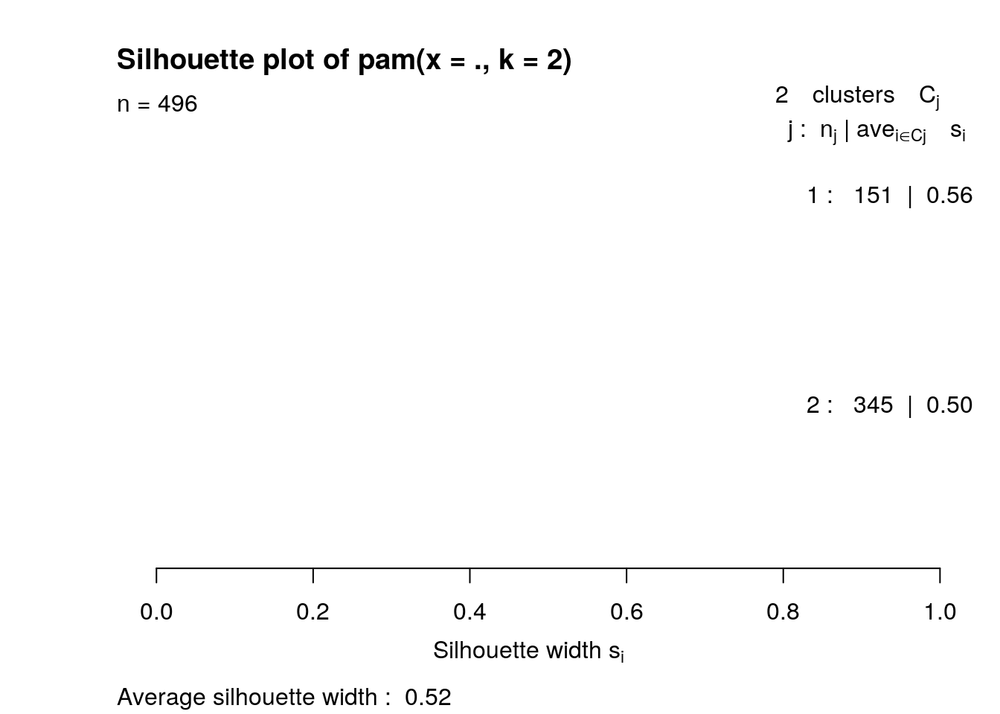
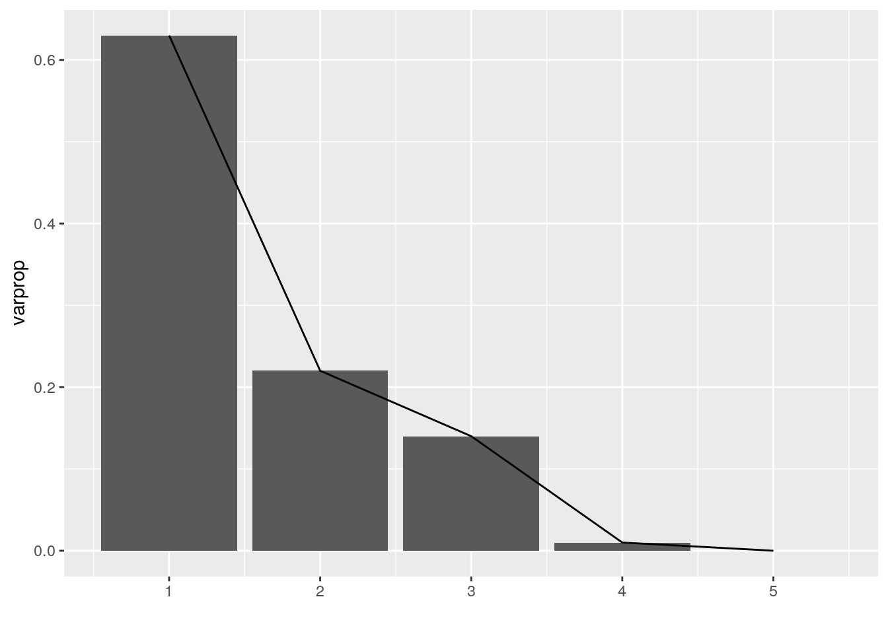

The two datasets that I have chosen contain data on all of the NBA players that have played so far this year. Specifically, the datasets contain data about 3 point shooting statistics. In the first dataset, the variables are the player name, the players position, the average number of 3 pointers he makes per game and the average number of 3 pointers he attempts per game. The second dataset contains variables for the players names, the average distance a players shot attempts are taken at, and the percentage of the players total shots that are 3 pointers (3 point attempt rate). These were all aquired from basketballreference.com ’s 2020-2021 season player per game statistics and shooting statistics. These are interesting to me because I am an avid NBA fan and I also love the statistical aspect of the game. Since Stephen Curry arrived on the scene, the number of 3 point attempts has dramatically risen across the board in the NBA and I am interested in looking at the data from this current season. I expect to see some potential associations with a few of the variables. First, the center position has become the lost art of the NBA. However, I still expect centers to be taking the least amount of three pointers as any other position because they are often the tallest players and it makes more sense for them to shoot closer to the basket. I also expect to see players that make the most three pointers per game be within any of the guard positions. This is because guards in the NBA now are the main three point shooters and it is honestly a necessity now for guards to shoot lots of threes and shoot them well.
library(tidyverse)
library(cluster)
NBA1 <- read_csv("NBA 3PT Shooting File.csv")
glimpse(NBA1)## Rows: 506
## Columns: 1
## $ `Player,Pos,3P,3PA` <chr> "Precious Achiuwa\\achiupr01,PF,0.0,0.0", "Jaylen…NBA2 <- read_csv("NBA 3PT Shooting File 2.csv")
glimpse(NBA2)## Rows: 506
## Columns: 1
## $ `Player,Pos,Dist.,3P` <chr> "Precious Achiuwa\\achiupr01,PF,3.5,.000", "Jay…NBA1 <- NBA1 %>% pivot_wider(1, names_from = `Player,Pos,3P,3PA`,
values_from = `Player,Pos,3P,3PA`) %>% pivot_longer(contains(",")) %>%
separate(name, into = c("Name", "Pos", "3P", "3PA"), sep = ",",
convert = T) %>% separate("Name", into = c("Name", "ID"),
sep = "\\\\") %>% select(c("Name", "Pos", "3P", "3PA"))
head(NBA1)## # A tibble: 6 x 4
## Name Pos `3P` `3PA`
## <chr> <chr> <dbl> <dbl>
## 1 Precious Achiuwa PF 0 0
## 2 Jaylen Adams PG 0 0.3
## 3 Steven Adams C 0 0.1
## 4 Bam Adebayo C 0.1 0.2
## 5 LaMarcus Aldridge C 1.3 3.6
## 6 Ty-Shon Alexander SG 0 0.5NBA2 <- NBA2 %>% pivot_wider(1, names_from = `Player,Pos,Dist.,3P`,
values_from = `Player,Pos,Dist.,3P`) %>% pivot_longer(contains(",")) %>%
separate(name, into = c("Name", "Pos", "Dist", "3PAr"), sep = ",",
convert = T) %>% separate("Name", into = c("Name", "ID"),
sep = "\\\\") %>% select(c("Name", "Dist", "3PAr"))
head(NBA2)## # A tibble: 6 x 3
## Name Dist `3PAr`
## <chr> <dbl> <dbl>
## 1 Precious Achiuwa 3.5 0
## 2 Jaylen Adams 11 0.25
## 3 Steven Adams 3.9 0.013
## 4 Bam Adebayo 8 0.014
## 5 LaMarcus Aldridge 16.6 0.302
## 6 Ty-Shon Alexander 21.5 0.5The data I pulled was from basketballreference.com and it was not tidy at all. The entire data sheets were both just 1 column and over 500 rows with the column header including all of the variable names meshed into one text. Thankfully, the variables were separated by a comma so id made it easy to separate. For the first data sheet I pulled data from all NBA players this 2020-2021 season in regards to their name, position they play, 3 pointer made per game, and their 3 pointers attemped per game. I had it downloaded as a CSV and read the data set in and named it NBA1. In order to demonstrate my ability to utilize the tidyr functions, I utilized the pivot_wider function first to make a variable for each player that holds 1 row including their name, ID, position, 3P, and 3PA. I then used pivot_longer for columns that contain a comma to essentially revert the dataset back to its orignal place. Then, I separated the column by the comma and created 4 columns, however the name column included both the players name and their ID separated by a so I further separated the Name column into 2 columns for name and ID. Finally, I selected the Name, Pos, 3P,and 3PA columns only and recoded them to NBA1, thereby leaving out the ID column. I did the same process for the second dataset. I downloaded the CSV and pulled it into RStudio and named it NBA2. The second dataset included the same players and the variables for the names/ID, position, 3 point attempt rate, and their average shot distance. First, I utilized the pivot_wider function first to make a variable for each player that holds 1 row including their name, ID, position, 3P, and 3PA. I then used pivot_longer for columns that contain a comma to essentially revert the dataset back to its orignal place. Then, I had to tidy the dataset up by creating 4 columns for each of the variables by separating by a comma. Then, I further separated the Name column into name and ID by separating by a . Finally, I selected the 3 columns for Name, Dist, and 3PAr and recoded it to NBA2. Thereby leaving out the player ID column and position for NBA2. I left out the position for NBA2 because the position data was already in NBA1. The player ID column is a unique column that basketballreference utilizes for easier player identification but for this project I did not need it. It is easier for me to identify the players soley by their name as the ID alone does not provide enough information to be able to tell which player it is.
NBA3 <- NBA1 %>% left_join(NBA2, by = "Name") %>% na.omit()
head(NBA3)## # A tibble: 6 x 6
## Name Pos `3P` `3PA` Dist `3PAr`
## <chr> <chr> <dbl> <dbl> <dbl> <dbl>
## 1 Precious Achiuwa PF 0 0 3.5 0
## 2 Jaylen Adams PG 0 0.3 11 0.25
## 3 Steven Adams C 0 0.1 3.9 0.013
## 4 Bam Adebayo C 0.1 0.2 8 0.014
## 5 LaMarcus Aldridge C 1.3 3.6 16.6 0.302
## 6 Ty-Shon Alexander SG 0 0.5 21.5 0.5glimpse(NBA3)## Rows: 496
## Columns: 6
## $ Name <chr> "Precious Achiuwa", "Jaylen Adams", "Steven Adams", "Bam Adeba…
## $ Pos <chr> "PF", "PG", "C", "C", "C", "SG", "SG", "SG", "C", "PF", "PF", …
## $ `3P` <dbl> 0.0, 0.0, 0.0, 0.1, 1.3, 0.0, 1.5, 2.1, 0.1, 0.4, 1.4, 1.1, 0.…
## $ `3PA` <dbl> 0.0, 0.3, 0.1, 0.2, 3.6, 0.5, 4.4, 5.2, 0.3, 1.8, 3.7, 3.8, 0.…
## $ Dist <dbl> 3.5, 11.0, 3.9, 8.0, 16.6, 21.5, 15.9, 19.3, 4.3, 12.8, 14.5, …
## $ `3PAr` <dbl> 0.000, 0.250, 0.013, 0.014, 0.302, 0.500, 0.508, 0.658, 0.036,…In order to add my datasets together, I used the left_join dplyr funtion. The reason why I used this is because both data sets had the same players involved. This included 506 NBA players from this current season. So, both datasets had the same player names. All that was different was the 3 point shooting data that was associated with each dataset and NBA1 had the positions that each player played. So, since the names were the same for each player in both dataset I went ahead and did a left join. I joined the two datasets by the players name since that was what was the same between the two sets. A left join essentially keeps everything on the “left” (x) alone and adds in data that matches from the other dataset (y). This way, I kept all the information for NBA1 dataset but just added in the Dist and 3PAr variables and data to it from NBA2. I renamed the joined datasets NBA3. I then went ahead and omit all rows that have an “NA” value associated with them. Since the NBA is a global sport, there are players in the leage from around the world which is great. However, for some reason RStudio has a difficult time being able to read in certain symbols. For instance, lots of players have tilde’s and accents associated with the spelling of their name but when I pulled the CSV files into R it was unable to read them properly and gave them an NA value. So, I went ahead and just go rid of all players that have the accents which came out to be 10 total players omitted from the joined dataset.
NBA4 <- NBA3 %>% mutate(Three_Percentage = `3P`/`3PA`)
NBA4 %>% filter(Pos == "C") %>% select(c(Name, Three_Percentage)) %>%
arrange(desc(Three_Percentage))## # A tibble: 91 x 2
## Name Three_Percentage
## <chr> <dbl>
## 1 Bam Adebayo 0.5
## 2 Isaiah Stewart 0.5
## 3 Bobby Portis 0.458
## 4 Gorgui Dieng 0.455
## 5 Meyers Leonard 0.435
## 6 Thomas Bryant 0.429
## 7 Nikola Joki_ 0.417
## 8 Joel Embiid 0.414
## 9 Chris Boucher 0.405
## 10 Frank Kaminsky 0.4
## # … with 81 more rowsNBA4 %>% filter(Pos == "C") %>% select(c(Name, `3PAr`)) %>% arrange(desc(`3PAr`))## # A tibble: 91 x 2
## Name `3PAr`
## <chr> <dbl>
## 1 Meyers Leonard 1
## 2 Will Magnay 1
## 3 An_ejs Pase__iks 1
## 4 Mike Muscala 0.689
## 5 Kelly Olynyk 0.648
## 6 Marc Gasol 0.637
## 7 Killian Tillie 0.6
## 8 DeMarcus Cousins 0.552
## 9 Brook Lopez 0.495
## 10 Justin Patton 0.486
## # … with 81 more rowsNBA4 %>% filter(Pos == "PG") %>% select(c(Name, Dist)) %>% arrange(Dist)## # A tibble: 89 x 2
## Name Dist
## <chr> <dbl>
## 1 Ben Simmons 4.3
## 2 Jared Harper 6
## 3 Tre Jones 6.3
## 4 Saben Lee 6.4
## 5 Bruce Brown 6.7
## 6 T.J. McConnell 7.6
## 7 Frank Mason III 8.1
## 8 Elfrid Payton 8.6
## 9 Devon Dotson 9.3
## 10 Jalen Lecque 10
## # … with 79 more rowsNBA4 %>% select(Name, `3P`, Three_Percentage, Pos) %>% arrange(desc(`3P`))## # A tibble: 496 x 4
## Name `3P` Three_Percentage Pos
## <chr> <dbl> <dbl> <chr>
## 1 Stephen Curry 4.7 0.412 PG
## 2 Damian Lillard 4.2 0.378 PG
## 3 CJ McCollum 4.2 0.404 SG
## 4 Buddy Hield 4 0.385 SG
## 5 Malik Beasley 3.5 0.398 SG
## 6 Zach LaVine 3.5 0.438 SG
## 7 Donovan Mitchell 3.4 0.395 SG
## 8 Fred VanVleet 3.4 0.374 SG
## 9 Joe Harris 3.3 0.493 SF
## 10 Duncan Robinson 3.3 0.388 SF
## # … with 486 more rowsNBA4 %>% filter(Pos == "SG") %>% select(c(Name, `3PA`)) %>% arrange(desc(`3PA`))## # A tibble: 120 x 2
## Name `3PA`
## <chr> <dbl>
## 1 Buddy Hield 10.4
## 2 CJ McCollum 10.4
## 3 Fred VanVleet 9.1
## 4 Malik Beasley 8.8
## 5 Jordan Clarkson 8.6
## 6 Donovan Mitchell 8.6
## 7 Zach LaVine 8
## 8 Terry Rozier 8
## 9 Eric Gordon 7.8
## 10 Tim Hardaway Jr. 7.7
## # … with 110 more rowsNBA4 %>% summarize(mean_3PA = mean(`3PA`), mean_3P = mean(`3P`),
max_Dist = max(Dist), min_Dist = min(Dist), median_Dist = median(Dist),
mean_3PAr = mean(`3PAr`), median_3PAr = median(`3PAr`), sd_3PAr = sd(`3PAr`))## # A tibble: 1 x 8
## mean_3PA mean_3P max_Dist min_Dist median_Dist mean_3PAr median_3PAr sd_3PAr
## <dbl> <dbl> <dbl> <dbl> <dbl> <dbl> <dbl> <dbl>
## 1 2.81 1.01 27.3 1 14.6 0.405 0.422 0.231NBA4 %>% group_by(Pos) %>% summarize(mean_Dist = mean(Dist),
n())## # A tibble: 10 x 3
## Pos mean_Dist `n()`
## <chr> <dbl> <int>
## 1 C 8.75 91
## 2 F 18.7 4
## 3 G 8 1
## 4 G-F 10.2 1
## 5 PF 13.7 103
## 6 PG 14.9 89
## 7 PG-SG 14.6 1
## 8 SF 15.2 85
## 9 SF-PF 18.8 1
## 10 SG 16.5 120First thing, I made a new variable called Three_Percentage which the the players 3 point percentage. I utilized mutate to take the variables 3P (Average 3P makes per game) and 3PA (Average 3P attempts per game) and divided 3P/3PA to get the player’s 3 Point Percentage. I then filtered by the center position and arranged the data descending so the center with the highest 3 point percentage is shown at the top. The results indicate that Bam Adebayo has the highest 3P% among all centers. Then, I decided to filter by the center position again and look at the 3PAr for each center in a descending manner. At the top of the list is Meyers Leonard, who is out of the NBA for innappropriate comments he made a few weeks ago. However, the data shows that this year 100% of Meyers Leonards shots taken were 3 pointers which is surprising for a center. I continued and filtered by the point guard position and arranged the players by the average distance of their shots. I found that of all the point guards, All-Star guard Ben Simmons had the smallest distance. This makes sense since Ben Simmons is a 6’10" point guard who has on many occasions displayed that he is not comfortable shooting beyond the arc. He is constantly in the news for his inability to shoot three pointers or even long distance jump shots and this data further shows that the average distance of his shots is near the basket. Then, I wanted to take a look at the best 3 point shooters so I arranged all players by the amount of 3 pointers they make per game and of course who else other than Stephen Curry atop of the list. He is a 3 point God and to further show his greatness, in the top 5 for 3P makes per game he has the highest 3 point percentage. Then, I decided to look at shooting guards who are responsible now for being some of the main shooters on their teams so I took a look at the shooting guards who attempt the most threes per game. This was no surprise either as at the top of the list is 3 point specialist Buddy Heild at over 10 three point attempts per game. Then, I decided to take a look at the entire players average 3 point attempts per game, average 3 point makes per game, the maximum and minimum distance, the median distance, the average 3 point attempt rate, the median 3 point attempt rate, and the standard deviation for 3 point attempt rate. What stood out to me the most was the average 3 point attempt rate which was over 40% which goes to show how far the pendullum has swuwng in the NBA in regards to 3 point shooting. Where 3 point shooting used to be scarce and even ridiculed by coaches, it is now a stape of the game. Finally, I grouped all of the players by their positions took the mean distance for their shots. Nothing surprising here again, but what I took a major note of was that centers still had the lowest distance (other than the G position but there was only one player that fit that mold so I wont include it in this description). It makes sense since centers are still the tallest players on the floor at all times and it makes sense for them to be closer to the basket to take their shots.
cormat <- NBA4 %>% select_if(is.numeric) %>% cor(use = "pair")
cormat %>% as.data.frame() %>% rownames_to_column("var1")## var1 3P 3PA Dist 3PAr Three_Percentage
## 1 3P 1.0000000 0.9805263 0.4927129 0.4316078 0.4889598
## 2 3PA 0.9805263 1.0000000 0.5044393 0.4437166 0.4001436
## 3 Dist 0.4927129 0.5044393 1.0000000 0.9417366 0.3072566
## 4 3PAr 0.4316078 0.4437166 0.9417366 1.0000000 0.2797205
## 5 Three_Percentage 0.4889598 0.4001436 0.3072566 0.2797205 1.0000000tidycor <- cormat %>% as.data.frame() %>% rownames_to_column("var1") %>%
pivot_longer(-1, names_to = "var2", values_to = "correlation")
tidycor %>% ggplot(aes(x = var1, y = var2, fill = correlation)) +
geom_tile() + scale_fill_gradient2(low = "red", mid = "white",
high = "blue") + geom_text(aes(label = round(correlation,
2)), color = "black", size = 4) + theme(axis.text.x = element_text(angle = 90,
hjust = 1)) + coord_fixed() + labs(title = "Correlation Map for NBA 3Point")
NBA4 %>% ggplot(aes(x = `3P`, y = Dist, color = Three_Percentage)) +
geom_point(stat = "identity") + ylim(0, 30) + xlim(0, 5) +
labs(title = "Average Shot Distance vs 3 Point Makes") +
ylab("Distance") + xlab("3 Point Makes Per Game") + theme_light() +
scale_fill_gradient(low = "blue", high = "red")
NBA4 %>% group_by(Pos) %>% summarize(mean_3PAr = mean(`3PAr`),
sd_3PAr = sd(`3PAr`), n = n(), se_3PAr = sd_3PAr/sqrt(n)) %>%
ggplot(aes(Pos, mean_3PAr)) + geom_bar(stat = "summary",
aes(fill = Pos)) + geom_errorbar(aes(y = mean_3PAr, ymin = mean_3PAr -
se_3PAr, ymax = mean_3PAr + se_3PAr)) + ylim(0, 1) + xlab("Position") +
ylab("Mean 3PAr") + theme(legend.position = "none") + scale_fill_grey() +
labs(title = "Mean 3PAr by Position") When looking at the first plot, the correlation map for NBA 3Point, it is clear there are twwo major trends. The major trends are that 3 point attempt rate and average shot distance have a very strong positive correlation and 3 point attempt rate has strong positive relationship with 3 point attempts per game. That makes sense since the more three poitners you take per game the higher the 3 point attempt rate would be. This means that as the 3 point attempt rate increases, so does the average shot distance. The correlation is 0.94 which is poitive and very strong since it is close to 1. Overall there are no other major trends as all the other variable combinations are positive but weak correlations. This is interesting since I thought 3 point shooting statistics other than average distance and 3 point attempt rate would have more of a correlation. However, it makes sense that average shot distance and 3 point attempt rate have a strong positive correlation. As you shoot more of your shots as 3 pointers, your 3 point attempt rate increases. Further, 3 pointers are the farthest shots in the NBA so the more three pointers you take it should mean that the average shot distance also increases.
When looking at the second plot, the Average shot distance vs the 3 point makes it is clear that there is a slight trend. It seems that for most players who do not shoot three pointers and therfor do not make lots of three pointers, it is for a reason and that is because they do not shoot it well. In the graph, most of the data points near 0 3 pointer makes per game, the colors are black and gray which are indiciative of low shooting percentage. Further, it is expected that those who shoot more three pointers are shooting them because they shoot a high percentage and therfor make more 3 pointers per game. This can be seen as the majority of points at the right of the graph are blue to light blue indicating that they make lots of three pointers and shoot at a high percentage. Also, it is interesting to see that there is a poitive but weak relationship between average distance and 3 point makes per game. I would have expected a stronger relationship but that does not seem to be the case and can also be shown with the first graph with the correlation being 0.49.
When looking at the third plot, the mean 3 point attempt rate by position there is some interesting findings. What is very interesting is that for the majority of positions there is a very small standard error for mean 3 point attempt rate except for the forward position. This is interesting but could be due to a smaller sample size for the forward position. Further, based on this graph the SF-PF position have the highest mean 3 point attempt rate. I would have expected the guard (PG, SG, G, PG-SG) positions to have the highest but they do not. Another very intersting trend is how small the mean 3 point attempt rate is for the center position. This makes sense since centers are the tallest and therfor it makes the most sense for a center to be shooting closer to the basket since it is a higher percentage shot for them. Overall, it is clear that for most positions other than center (and G-F but that is a very small sample size) they have pretty high 3 point attempt rates which shows the NBA’s trend towards 3 point shooting being favored.
pam_dat <- NBA4 %>% select(-Pos, -Name)
sil_width <- vector()
for (i in 2:10) {
pam_fit <- pam(pam_dat, k = i)
sil_width[i] <- pam_fit$silinfo$avg.width
}
ggplot() + geom_line(aes(x = 1:10, y = sil_width)) + scale_x_continuous(name = "k",
breaks = 1:10)
pam2 <- NBA4 %>% select(-Pos, -Name) %>% pam(2)
pam2## Medoids:
## ID 3P 3PA Dist 3PAr Three_Percentage
## [1,] 88 0.2 0.7 7.5 0.090 0.2857143
## [2,] 114 1.3 3.6 16.6 0.588 0.3611111
## Clustering vector:
## [1] 1 1 1 1 2 2 2 2 1 2 2 1 1 1 2 2 2 2 2 2 2 1 1 2 1 2 2 2 2 2 1 2 2 2 1 2 2
## [38] 2 2 1 1 2 2 2 1 1 1 1 2 2 1 2 2 2 1 2 2 2 2 1 2 1 2 2 2 2 2 2 1 2 1 2 2 2
## [75] 1 2 2 2 1 1 1 2 2 2 1 2 2 1 1 2 1 2 1 2 1 2 1 2 1 2
## [ reached getOption("max.print") -- omitted 396 entries ]
## Objective function:
## build swap
## 3.602268 3.338492
##
## Available components:
## [1] "medoids" "id.med" "clustering" "objective" "isolation"
## [6] "clusinfo" "silinfo" "diss" "call" "data"plot(pam2, which = 2)
library(plotly)
final <- NBA4 %>% select(-Pos, -Name) %>% mutate(cluster = pam2$clustering)
final %>% plot_ly(x = ~`3PAr`, y = ~`3P`, z = ~`3PA`, color = ~cluster,
type = "scatter3d", mode = "markers")library(GGally)
# ggpairs(final, columns=1:5, aes(color=cluster))
NBA4_nums <- NBA4 %>% select_if(is.numeric) %>% scale
NBA4_nums[is.na(NBA4_nums)] <- 0
rownames(NBA4_nums) <- NBA4$Name
NBA4_pca <- princomp(NBA4_nums)
summary(NBA4_pca, loadings = T)## Importance of components:
## Comp.1 Comp.2 Comp.3 Comp.4 Comp.5
## Standard deviation 1.759175 1.0418036 0.8218980 0.23575537 0.119400262
## Proportion of Variance 0.628313 0.2203586 0.1371494 0.01128448 0.002894468
## Cumulative Proportion 0.628313 0.8486716 0.9858211 0.99710553 1.000000000
##
## Loadings:
## Comp.1 Comp.2 Comp.3 Comp.4 Comp.5
## 3P 0.496 0.409 0.267 0.718
## 3PA 0.491 0.367 0.380 -0.691
## Dist 0.472 -0.505 -0.721
## 3PAr 0.451 -0.557 0.692
## Three_Percentage 0.293 0.364 -0.880eigval <- NBA4_pca$sdev^2
varprop = round(eigval/sum(eigval), 2)
ggplot() + geom_bar(aes(y = varprop, x = 1:5), stat = "identity") +
xlab("") + geom_path(aes(y = varprop, x = 1:5))
For this project, I decided to look at the five numeric variables that were part of my dataset. This includes 3PAr, 3PA, 3P, Dist, and Three_Percentage. For this set, I decided to look at how many clusters would be necessary for this dataset. In the plot, I found that there was no single cluster number that would have had an averade silhoutte width above 0.7. Instead, at 2 clusters the average silhouette width was 0.55 which indicates that a reasonable strucutre has been found. So, I used PAM clustering for the 2 clusters. I then plotted a 3-D graph to see the clusters with 3PAr as the x-axis, 3P as the y and 3PA as the z axis. In the graph, the clusters are shown with the first cluster in the corner with all the low 3PA, 3P, and 3PAr players which had a strong silhoutte width but the second cluster was a little bit larger and therfor a smaller silhoutte width.
Then, I made a plot to see the number of PCs to use. It seems based on the plot to use 4 PCs since it tails off at 5.
## paste this chunk into the ```{r setup} chunk at the top of
## your project 1 .Rmd file
knitr::opts_chunk$set(echo = TRUE, eval = TRUE, fig.align = "center",
warning = F, message = F, tidy = TRUE, tidy.opts = list(width.cutoff = 60),
R.options = list(max.print = 100))